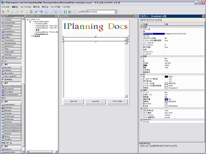

株式会社 アイプランニング
Towa Edogawabashi building 8F
Yamabuki-cho 347
Shinjuku-ku Tokyo
Phone: 03-5225-1147
エンタープライズ向けリッチクライアント環境(RIA)「Curl」について調査しました。
- Curlの紹介
- メリット
- デメリット
- 制作メモ
- まとめ
- Curlの紹介
- この記事について
- 動作デモ
- デモは、Curl Apps Galleryで見ることができます。実行には、指定バージョンのCurl RTEをダウンロードする必要があります。
http://developers.curlap.com/gallery/apps
- メリット
- 基本的な利点
- RIAの中では古参
- 3Dグラフィック表示
- コピーの制御
- グラフ表示が簡単
- Windowsの操作性に近いUIコンポーネント
- ビジュアル開発環境がある
- オフラインでも利用可
- デメリット
- 学習コストが高い
- 普及率の低さ
- 旧プラグインが必要になることがある
- 特権が必要な場合、ユーザが設定を操作することになる
- Webサーバ上に配備する場合ライセンスが必要
- 制作メモ
- 基本的な構成
- スキンの利用
- 何でもRecordSet
- {RecordField "日付", domain = String},
{RecordField "商品名", domain = String},
{RecordField "価格", domain = int},
{RecordField "種別", domain = String}
},
{RecordData 日付 = "4/3",商品名 = "ジュース",価格 = 150,種別 = "嗜好品"},
{RecordData 日付 = "4/3",商品名 = "タバコ",価格 = 300,種別 = "嗜好品"},
{RecordData 日付 = "4/3",商品名 = "ラムネ",価格 = 70,種別 = "嗜好品"},
{RecordData 日付 = "4/3",商品名 = "ラーメン",価格 = 450,種別 = "昼食"},
{RecordData 日付 = "4/3",商品名 = "JR切符",価格 = 380,種別 = "交通費"},
{RecordData 日付 = "4/3",商品名 = "ノート",価格 = 110,種別 = "消耗品"},
{RecordData 日付 = "4/3",商品名 = "プリンタインク",価格 = 800,種別 = "消耗品"}
}
- ローカルアプリケーションとして動かす
- ライセンスの申請
- サーバへの配備
- Ruby on Railsとの連携
- まとめ
- JAVA(Fx)との比較
- 使ってみての感想
- リンク集
- 公式
- 公式ページ
http://www.curlap.com/ - Curl Users Group
http://www.curl-users-group.org/index.php?Curl%20Users%20Group - デベロッパー向け公式ページ
http://developers.curlap.com/home.html - →チャート（グラフ作図）・フォーム部品の講座
http://developers.curlap.com/re-reference/24-ui.html
- 公式ページ
- CodeZine
- CodeZine:Curlタグ全て
http://codezine.jp/article/tag/729 - CodeZine:Curl入門記事
http://codezine.jp/article/corner/228
- CodeZine:Curlタグ全て
- その他
Web上からアクセスできるアプリケーションの利便性が認識され、RIAの時代がやってこようとしています。この分野ではAdobe AIRやSilverlight, Java FXが注目を浴びていますが、エンタープライズではCurlの適用事例が多く見られます。Curlは比較的古参にあたるRIA環境ですが、一般の開発者の間では知名度が低く、評価するにもWebや書籍の情報が少ないという問題があります。
当記事では、導入・開発でやったこと・詰まった点などのメモとともに、Curl開発情報へのリンクを提供します。
公式ページでは、以下に挙げた特徴について触れています。
http://www.curlap.com/products/curl.html
・複雑なインターフェース
・クライアント資源との連携
・膨大なデータの処理
・複雑な帳簿出力
・高速実行
・SOA/マッシュアッププラットフォーム
・情報漏えい対策
・アプリケーションの継続性
・実行環境の安全性
・運用負荷の低減
・高い開発生産性
その他、印象に残った点を以下にまとめます。
Curlは2002年にVer1を発売しており、同様のRIA環境であるAdobe AIRやSilverLight, Java FXに先行しています。
執筆時点(2009.05.27)でVer7までバージョンアップを重ねており、企業での採用実績も少なからずあることから、安定動作が期待できます。
3D表示機能を標準で備えているのもCurlの特徴の一つです。3Dのユーザインターフェースを作ったり、モデルを閲覧する用途にも使うことができます。
標準で3Dモデルのフォーマットを読み込む機能はありませんが、3D Galleryというオープンソースのサンプルアプリケーションが用意されています。3D Galleryでは、Google SketchupやGoogle Earthで利用されているKMLというフォーマットを読み込むことができます。
http://developers.curlap.com/gallery/apps/96
デフォルトで画面をそのままプリンタに出力することができます。また、コントロール内の文字列をコピー＆ペーストすることができ、あたかもWebページの一部であるかのように活用することができます。
これらの特徴はWebアプリケーションももともと備えている特長ですが、クリップボードへのコピーや印刷の制御は不可能です。Curlは印刷の可・不可を制御することができます。また、クリップボードへのコピー・ペーストの制御も可能です。
詳しくは「情報漏えい対策デモ」を参照してください。
http://www.curlap.com/products/demo/
簡単な円グラフの描画であれば、わずかこれだけのコードで実現できます。
||円グラフ
{let chart:AntialiasedFrame =
{AntialiasedFrame
{PieChart
width = 10cm,
height = 10cm,
{PieSet
data,
"価格",
label-data = {ChartDataSeries data, "種別"}
}
}
}
}
dataとなっているところがデータモデルですが、dataの内容が更新されればすぐグラフに反映されます。データをレポート化するようなアプリケーションであれば、簡単に作ることができます。
ボタンやテキストボックスはもちろん、Excelライクなテーブルコンポーネント等を備えています。他のRIAでもデザインが優れたコンポーネントはありますが、普段使うようなアプリケーションと似た操作で使えるのは実用的だと思います。
Curlでは、ビジュアル開発環境としてCurl IDEが利用できます。Curl IDEには、無償版と、有償のProが存在します。
また、Eclipseプラグインも用意されているので、どちらか好みのIDEを選ぶことができます。
Adobe AIRにはFlex Builder, SilverLightにはExpressionがありますが、JavaFXには執筆時点(2009.05.27)で公式のビジュアル開発環境がありません。

ネットワークから切断されていても動作します。オフライン中には内部SQLiteへの書き込みに対応します。
高い開発効率を謳ってはいますが、学習コストは高い部類に入ると考えています。第一にWeb上に情報が少ないこと、第二に、Javaのような言語とは似ていないマークアップ言語であることです。個人的には括弧の使いどころを理解することができず、スコープの範囲が分からないまま開発を進める事態になっていました。
以下リンクに、括弧についての詳しい説明がありました。
http://www.hyuki.com/yukiwiki/wiki.cgi?CURL%BC%C2%B3%AB%C8%AF%B9%D6%BA%C2#i42
Flashのような、インストール率が100%に迫る環境と比べて、Curlはまずクライアントにインストールされていることは期待できません。
JavaやFlashのような、広く一般に使われているプラットフォームについては、
動作検証が十分に行われ、どのようなPCにおいても動作することを保証しやすいといえます。
ただし、Curlは国内では一般的なプラットフォームでは無いため、
想定した環境以外では動作を保障できないかもしれません。
また、Web上に資料が少ないことも、問題発生時のリスクを高めています。
Apps Galleryを紹介したときにも触れましたが、Curlアプリケーションは特定のバージョンのプラグイン向けに作成します。最新VerのCurlプラグインでは動かないというのは、少し違和感があります。
特権が必要なアプリケーションについては、ユーザーがCurlプラグインの設定を手動で変更する必要があります。たとえばローカルファイルにアクセスするようなアプリケーションを作れば、全てのユーザーがプラグインの設定を操作しなければいけなくなるでしょう。
商用での利用は『Curl Pro/デプロイメント・ライセンス』が必要になります。価格はこちらで確認出来ます。
なお、非商用用途の場合、機能限定ライセンスを無償で発行してもらうことが出来ます。
Curlはクライアントを担当し、サーブレット等と通信させ、サーバ側にDBアクセス等を任せるのが基本的な構成になります。
標準のボタンはWindows95を思い起こさせる、灰色のボタンですが、これは変更可能です。スタイルコントロールを利用することで、ボタンにスキンを適用することができます。
以下アドレスからダウンロードできます。デフォルトでは、Macのようなきれいな見た目です。縦に伸ばすと、入力可能部分だけが伸びて欲しいのに、全体が伸びてしまうあたりが少し気になりました。
http://www.curlap.com/download/tool/#scl
テーブル、グラフのデータはRecordSetで統一されていますので、RecordSetは多用します。
たとえばRecordSetは以下のように書きます。
{RecordSet
{RecordFields
簡単なグラフとテーブルを利用したアプリケーションをサンプルとして用意しました。
上記ファイルを適当な場所に解凍し、実行には「特権」の設定が必要になります。
スタートメニュー＞Curl RTE＞Curl Control Panelを開き、Add Privileged Directoryから、サンプルを含むフォルダを指定してください。
設定後、start.curlを実行することで起動します。
ローカルで動かす分には、IDEに同梱されているローカル用ライセンスを使うことができますが、Webサーバ上に配備する際にはライセンスが必要になります。無料のデプロイメント・ライセンスを個人名義で申し込んでみました。
http://www.curlap.com/products/licence/
申請URLは、配備したいアドレスのルートを指定するだけでOKです。一つのライセンスで複数のアドレスに対応できます。
申請用ページは、Curl/Proの見積もり画面と共通になっています。「キーを発行するライセンス名」を「デプロイメント・ライセンス（無償）」に変更してください。
申請後、メールでデプロイメント・ライセンスのファイルが届きます。Curl6用のライセンスはcurl-license-5.datです。別バージョンのCurlを利用したいときは、個別にライセンスを申請する必要があります。
サーバへの配備は、Curl IDEから「プロジェクト＞デフォルトのデプロイメント」で出力されたフォルダをサーバにアップロードします。ただし、MIMEが適切に設定されていなければ動作しません。私の場合、MIME変更の権限がない自社サーバに配備するのは断念し、個人のWebスペースにてテストしました。
MIMEタイプの設定はApacheであれば以下のとおりです。
mime.typeファイルに以下の行を追記してください。
Text/vnd.curl curl
application/vnd.curl.pcurl pcurl
プロジェクト内のファイルをデプロイしただけでは動きません。先ほど取得したライセンスをサーバ内に置く必要があります。ライセンスは、プロジェクトと同じ場所か、ルートに配置します。
ライセンスをうまく配備できていないと、以下のようなエラーが発生します。
ここは詰まりやすい部分でした。エラーが出てCurlアプリケーションが動かないときは、以下アドレスが参考になります。
http://d.hatena.ne.jp/curl/20070219
以下のサンプルコードを使って、Restを使いRuby on Rails2.0と通信をします。
http://developers.curlap.com/re-reference/30-server/19-ruby-on-rails.html
Ruby on Railsは自動でコードを生成するところが大きな特徴です。scaffoldを使うと、htmlでCRUD（DBの基本操作）を行うことができる画面が生成されます。同時に自動的にXMLで入出力するコードが生成されますが、これを用いてCurlとRailsを連携させることができます。
Rails2.0でサンプルを動かすまでに、以下の操作を行いました。
＜各種インストール＞
・Ruby(One-Click Installer)
・MySQL
・ruby-mysqlライブラリ(>gem install mysql)
・rails(>gem install rails)
以上のセットアップを済ませます。
Windows環境で「libmysql.dllがない」とエラーが出る場合、
C:\ruby\bin以下にlibmysql.dllをコピーするといいようです。
（libmysql.dllはMySQLインストール先のbinフォルダに入っています）
＜構築例＞
demoというスキーマに、Diaryというテーブルを持つ場合です。
・プロジェクトを生成
rails demo -d mysql
・スキーマの作成
rake db:create
・DB設定
config\database.ymlを編集します。
DBのログインID,パスワードを設定してください。
・コードの自動生成
> ruby script\generate model Diary
> ruby script\generate scaffold Diary title:string date:datetime content:text
６．テーブルの作成
rake db:migrate
７．起動
> ruby script\server
http://localhost:3000/diaries
にアクセス。
これで、CRUDの出来るWebアプリケーションが出来上がりました。後はテンプレートを編集して、作りたい画面に近づけていきます。
＜Curl側＞
http://developers.curlap.com/re-reference/30-server/19-ruby-on-rails.html
上記アドレスからrails.zipをダウンロードし、プロジェクトフォルダ内に解凍します。
収録されているサンプルを元に、RecordGrid内にXMLから取得したデータを表示させてみます。
サンプルのままでは日本語のフィールドが正常に表示されません。
（最後の一文字しか見えません）
SAXパーサのcharactersメソッドで文字列をストアする処理が入っていないためです。
以下のような列を追記してください（改行、行頭行末に空白が入るデータは想定していません）
*** 217,223 ****
field private record-set:RecordSet
field private current-record:#RecordData
field private current-value:#String
+ field private chrBuf:StringBuf = {StringBuf}
{constructor package {default
entity:String,
record-set:RecordSet
*** 238,244 ****
atts:Attributes
}:void
{if name == self.entity then
+ set self.chrBuf = {StringBuf}
set self.current-record = {RecordData}
{return}
}
*** 249,255 ****
start:int,
length:int
}:void
+ {self.chrBuf.concat ch}
set self.current-value = {ch.to-String}
}
*** 266,274 ****
{self.record-set.append self.current-record}
{return}
}
+ {self.chrBuf.trim}
+ set self.current-value = {self.chrBuf.to-String}
+ set self.chrBuf = {StringBuf}
{self.current-record.set name, self.current-value}
}
}
最後に、サーバ部にTomcat+Javaでなく、Ruby+Railsを使う利点を追記しておきます。
個人的には、CurlのGUI作成の手早さと、Railsの機動性の高さは良く合っていると思います。サーバに負荷をかけずクライアントで処理を行えるCurlの能力が、Rubyの遅さを補えるのではないでしょうか。
Curlの利点は帳簿ツールのようなグラフィカルなアプリケーションを、比較的シンプルに書けるところにあります。同種のものをJava(FX)で作成するより、見栄えがして品質が高く、メンテナンスのしやすいものが書けます。
一方、JAVAはサーバ・クライアント両方を同じ言語で記述することができます。また、JAVAのほうが圧倒的に資料が多く、トラブルの際に解決しやすいという利点があります。ランタイムをインストールして利用しているユーザも多いため、トラブル発生の可能性も低いです。
JAVAより適用範囲は狭くなりますが、帳簿生成など限定された部分だけをCurlに置換するような使い方が望ましいのではないでしょうか。
思ったよりも操作性はよく、セキュリティを損なわずに利便性を確保している点でも良くできています。Webの標準技術として使われることは無いかもしれませんが、グラフを多用するアプリケーションに対しての生産性は高く、社内アプリケーション用途では確かに使い道がありそうです。
ヘルプは非常に良くできており、ヘルプ上でコード片を編集して動かすことができるので、学習の際はヘルプを活用できるかが鍵になりそうです。
おそらく最もネックになると思われるのは、言語自体の癖と、資料の少なさ、マイナーさです。JavaやAIR等と競合する立場にあるので、今後資料が充実するとは限りません。言語自体も、Javaをやってきた人間にとってすぐ読めるようなものではなく、エラーのたびに言語仕様を読み直す必要がありました。
Curlで自然に記述できる範囲内、たとえば帳簿システムのようなものに限れば、高品質なものを効率よく作ることは可能です。しかし、先述のリスクは認識した上で導入する必要があります。
アイプランニング技術情報
技術情報TOPページ
プログラマ募集中・・・
お客さまの立場に立ってモノが作れる判断力、企画力、コンサルティング能力を磨きたくはありませんか？プログラム能力は、プロジェクトを通じて自然と能力があがるようなシステムになっています。初心者プログラマであっても３年程度で、その能力は初心者だったとは思えないくらいのスキルとなっています。
これは、「最初は誰でも初心者だ」という教育方針があるため、また、多くの社員が入社して初めてプログラミングにふれたという経験があるために自分のつまづき体験や、成功体験を含めた教育がなされているからなのです。
このようにアイプランニングでは、社員１人ひとりの個性と人間性を重視し、スキルにあったマンツーマン教育であなたを一人前のエンジニアへと成長させていきます。 それは誠実なスタッフが集まっているからこそ、どんなお客様からも信頼される企業に成長できるから。私たちはそう考えています。
プログラマを目指して会社に入ったものの、思った通りの仕事をさせてもらえなかったと思っている人、教育システムが十分でなかったためにスキルが身に付いていないと思っている人も気軽にご応募ください。パソコンのスキルに自信のない方でも、マンツーマンの研修制度で一人前に成長できるフィールドを整えておりますので安心してご応募くださいね。
知識だけでなく本当の開発力が身につく環境でのシステム開発でみつかる『やりがい』はもちろん、プライベートでも今までになかった充実感が得られますよ。